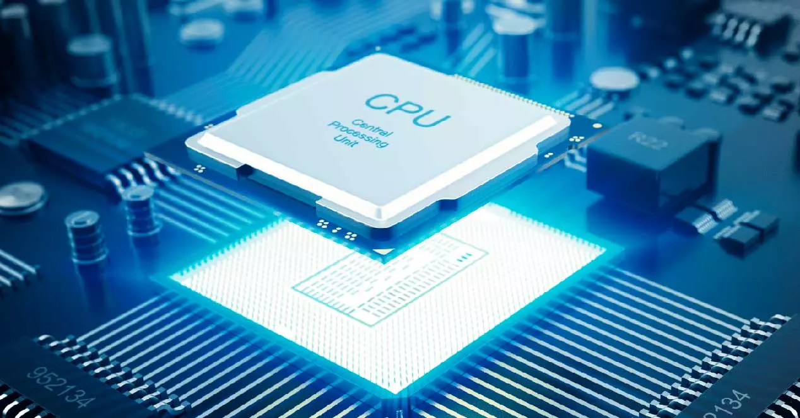
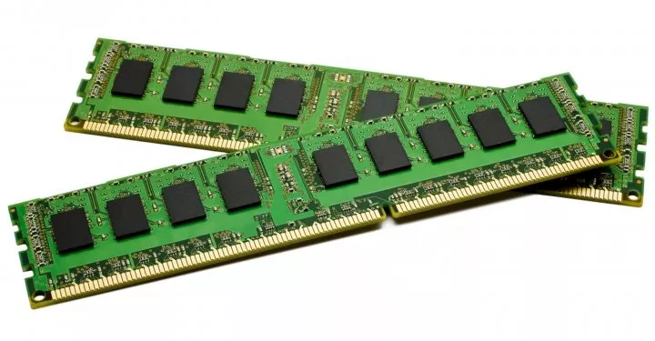
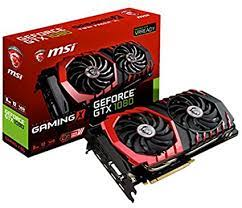

Procesador
El procesador, también conocido como CPU, es el cerebro del ordenador. Es el encargado de ejecutar las instrucciones de los programas y realizar los cálculos necesarios.
- Velocidad de reloj: medida en GHz
- Número de núcleos: indica la cantidad de unidades de procesamiento que tiene el procesador

Memoria RAM
La memoria RAM es el lugar temporal donde el ordenador almacena los datos que está utilizando en ese momento. Cuanto más RAM tenga el ordenador, más programas podrá tener abiertos al mismo tiempo.
- Velocidad: medida en MHz
- Capacidad: medida en GB

Almacenamiento
El almacenamiento es el lugar donde el ordenador guarda los programas y los datos. Puede ser en forma de disco duro (HDD) o de estado sólido (SSD).
- Disco duro (HDD)
- Almacenamiento mecánico con una capacidad de almacenamiento grande pero con una velocidad de lectura/escritura más lenta.
- Estado sólido (SSD)
- Almacenamiento electrónico con una capacidad
de almacenamientomenor pero con una velocidad de lectura/escritura mucho más rápida.
Tarjeta gráfica
La tarjeta gráfica, también conocida como GPU, es el encargada de generar la imagen en la pantalla del ordenador. Es esencial para jugar videojuegos o utilizar aplicaciones gráficas.
| Modelo | Frecuencia | Memoria | |
|---|---|---|---|
| GTX 1080 | 1.6GHz | 1600Mhz | 8GB |
| RX 5700 XT | 1.8GHz | 1800Mhz | |
| RTX 3080 | 1.9GHz | 1900Mhz | 10GB |

Tu opinión importa por eso queremos saber si esta página te ha sido útil
Si quieres saber más información sobre los componentes de un ordenador pulsa aquí